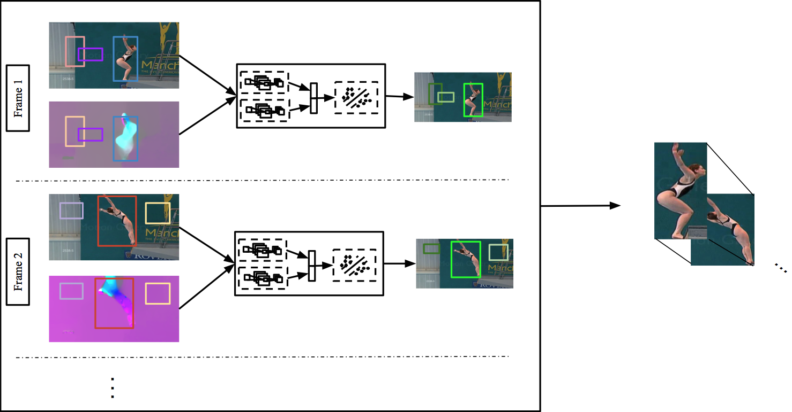

We address the problem of action detection in videos. Driven by the latest progress in object detection from 2D images, we build action models using rich feature hierarchies derived from shape and kinematic cues. We incorporate appearance and motion in two ways. First, starting from image region proposals we select those that are motion salient and thus are more likely to contain the action. This leads to a significant reduction in the number of regions being processed and allows for faster computations. Second, we extract spatio-temporal feature representations to build strong classifiers using Convolutional Neural Networks. We link our predictions to produce detections consistent in time, which we call action tubes. We show that our approach outperforms other techniques in the task of action detection.
paper
Reference and pretrained models: models(2.8GB)
Before using the available source code, you need to install Caffe. Action Tubes github repo: ActionTubes_github You can find very useful instructions in the README. Please read it before you use the source code.
UCF Sports evaluation of Action Tubes and other approaches: UCF Sports
When citing our system, please cite this work. The bibtex entry is provided below for your convenience.
@article{actiontubes,
Author = {G. Gkioxari and J. Malik},
Title = {Finding Action Tubes},
Booktitle = {CVPR},
Year = {2015}}
For any questions regarding the work or the implementation, contact the author at gkioxari@eecs.berkeley.edu